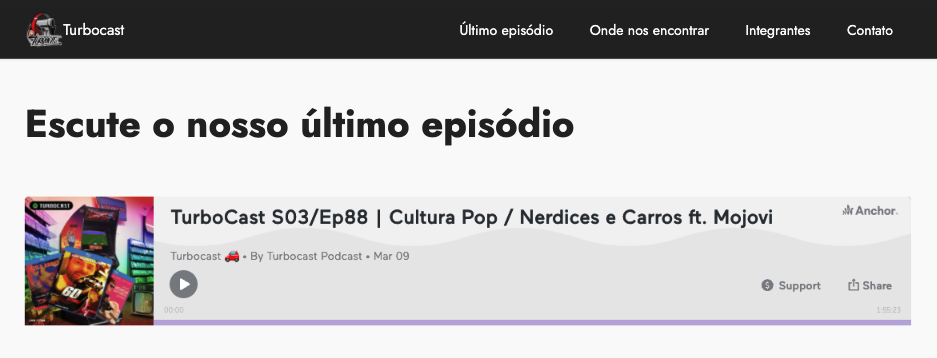
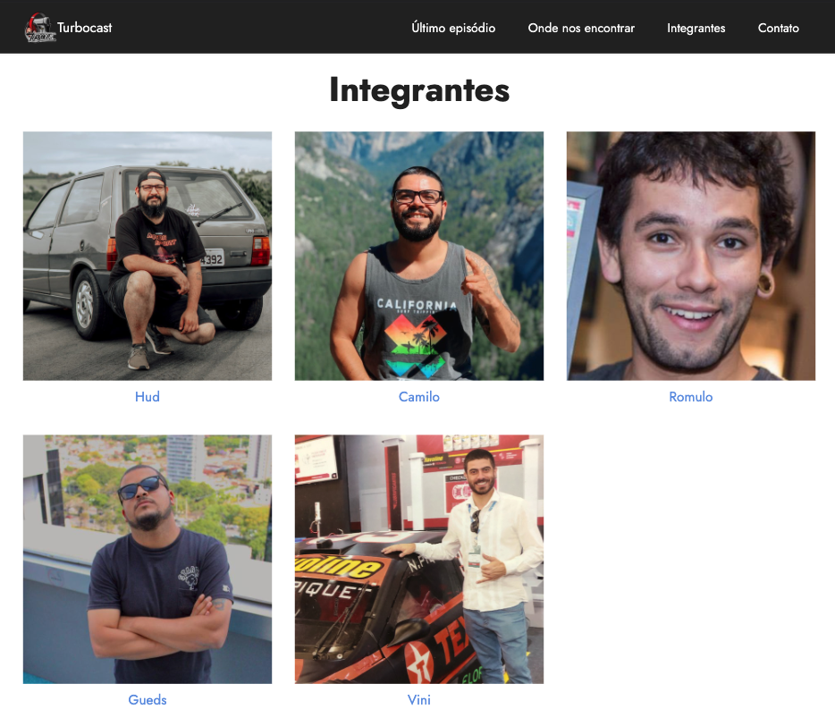

Quem me conhece sabe. Sou viciado no mundo dos carros e estou sempre envolvido de alguma forma e sempre consumi muito conteúdo gear head e o Turbocast é um desses casos.
O Turbocast é um podcast formado por 5 apresentadores e mais algumas pessoas ajudando em volta, a maior parte do conteúdo é sobre carros, mas sempre rola uma resenha geral sobre assuntos gerais e sempre que podem mantém o foco no mundo automotivo.
Contexto do desafio:
Criar um bot para gravação de áudio no discord…. sim. Nada a ver com o projeto que descrevo aqui. Como isso aconteceu? Vi um post no instagram do TC buscando desenvolvedores para o tal bot, porém não explicaram direito e decidi trocar uma ideia.
Acabamos evoluindo um pouco o papo e acabamos pensando o seguinte: O bot não resolveria o problema deles, já que o bot atual dependia do discord e no caso o problema era do discord e não do bot.
Com isso reparei que eles não tinham um site e propus criar. Dai sim chegamos no contexto correto rsrs
Desenvolvimento
O site foi pensado para ser o mais simples possível. Daí criei uma landing page simples contendo poucas sections, na sua maioria institucional, falando sobre a empresa, mostrando seus integrantes e onde podem ser encontrados.
Vou destacar aqui no post apenas duas sections, onde tive um pouco mais de trabalho pra criar algo que pensamos no momento da ideia.
Porém para ver o site todo, basta abrir o site: turbocast.com.br
Section: Escute nosso último episódio
O contexto para esta section, foi bem simples: precisamos mostrar o último ep do podcast. Inicialmente fizemos manualmente, toda quarta feira o link da publicação era substituído. Porém toda publicação que envolve outros players é como nos blogs e gera um RSS feed, neste caso, pegamos o feed público do canal deles no Anchor, plataforma de podcasts do Spotify e a partir desse RSS feed, montamos o player automaticamente com o último ep do feed.
Com isso, toda quarta feira, data de publicação do turbocast, o site já abre com o novo ep disponível para escutar no próprio site usando o player do anchor.

Como foi feito:
const podcastCode = 'xpto123';
const podcastName = 'nomeDoPodcast';
var url = `https://anchor.fm/s/${podcastCode}/podcast/rss`;
var lastEpisode = $('.lastEpisode');
function loadEpisode(url) {
$.ajax({
url: url,
type: 'GET',
dataType: "xml"
})
.done(function(xml) {
// Aqui já com o XML do RSS, navegamos pra encontrar os valores que precisamos pra montar a URL do último EP.
var channel = $(xml).find('channel');
var lastItem = $(channel).find('item').first();
var urlEpisode = $(lastItem).find('link').text();
var embeddedUrl = `https://anchor.fm/${podcastName}/embed/episodes/${urlEpisode.split('/').pop()}`;
console.log(embeddedUrl);
// Aqui já com a embeddedUrl montada, criamos um iframe para montar o player direto no site.
lastEpisode.html(`<iframe src="${embeddedUrl}" height="200px" width="400px" frameborder="0" scrolling="no"></iframe>`);
})
.fail(function(){
lastEpisode.hide();
});
}
loadEpisode(url);
Section: Integrantes
O contexto desta section, surgiu por um motivo: não sabia qual integrante vinha antes. Ao perguntar, gerei dúvidas no povo do turbocast também. Daí fiz algo para resolver o problema, montei uma lista de integrantes e fiz um sort. rsrsrs
Portanto, toda vez que abrir o site, os integrantes serão exibidos de forma aleatória. =D

Como foi feito:
const integrantes = ['gueds', 'camilo', 'hud', 'romulo', 'vini'].sort(() => .5 - Math.random());
// Após definir randomicamente os integrantes com o .sort(), bastou montar as imagens na section
Considerações finais
Após criar o site, virei o menino da TI do podcast.
Hoje temos alguns projetos em conjunto em andamento, ainda secretos mas em andamento.
Vale deixar aqui registrado um agradecimento ao Turbocast, que foi meu primeiro case unindo minha paixão pelo meio automotivo com a minha profissão. Tamo junto povo. =D